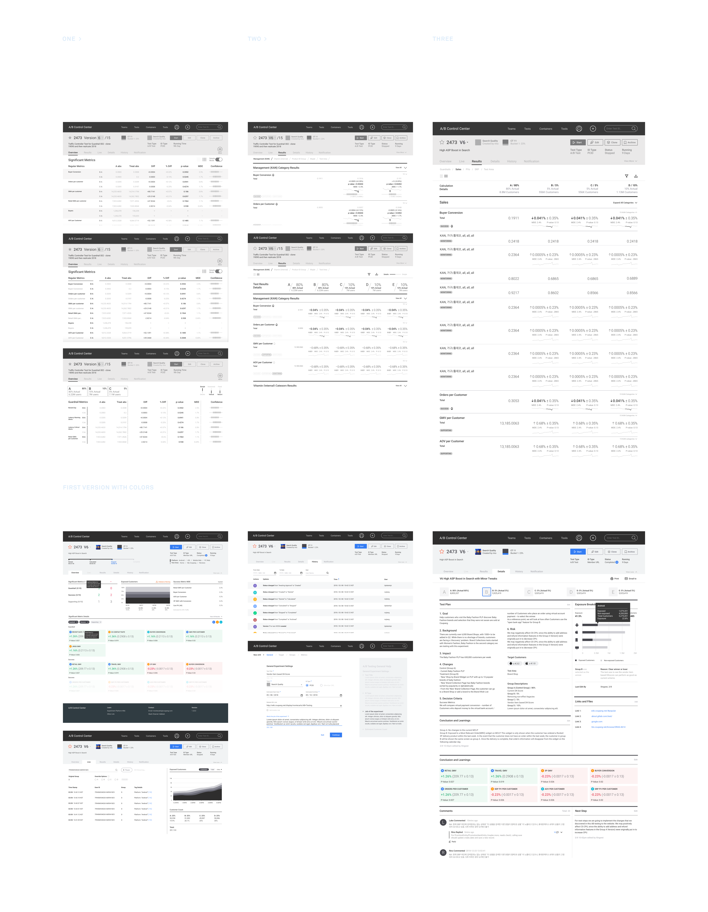

Project Type
User experience
Interaction design
Tools
Sketch & Figma
Zeplin
CSS
Project Length
> 12 months
My Contribution
Research analysis
User interviews
Journey mapping
Wireframing
Design system
Overview
Experiment Center (XPC) is a platform that enables all internal users at Coupang to run quality experiments. It empowers teams to make informed and timely business decisions based on the data from experiments.
As the chief designer on the Experiment Platform team, I led the redesign of the user interfaces. From ideation to development, over the course of 12 months, I've worked alongside interdisciplinary team members to craft this platform.

A / EMPATHIZE
Generative Research
Discovering the dealbreakers
In order to gain a clear understanding of usability issues in the current experience, we conducted 15 user interviews with full-time employees across all teams to learn about their daily routines with XPC. These are what they shared:

Competitive Analysis
Evaluate the viability
Meanwhile, I conducted a competitive analysis of features on other similar platforms to identify unserved or underserved gaps.
We used Google Sheets because it's a tool accessible to everyone.

B / DEFINE
Key Insights
How might we optimize the XPC
Building on the pain points collected from user interviews, we aimed to highlight crucial stages in each user flow.

User Personas
Core needs
We developed personas in order to understand what different core needs each user type may have. There are two major types of users using XPC:
-
Experienced users
-
New users
These are power users who create experiments on a daily basis. They are looking for more advanced features which enable them to dive deep into the complex datasets.
New users have very little experience in AB testing so creating their first test and monitor/ interpret its data can be quite confusing and imitating. Very often they don’t know where to start.
In order to address both needs and expectations, we sought to find an optimal balance point between 'guiding them' and 'allowing them to freely explore'.

User Journey Map
Analyze opportunities
Based on the painpoints that were collected from the user interviews, we try to emphsize important stages during each user flow. Promoting their outcomes are expected to increase efficiency as well as guiding new users.
Main User Flow
Process mapping
I created a process map to aid in identifying relationships and comprehending gaps throughout the experimentation process.


C / IDEATE
Mapping
Contents architecture
After several brainstorming sessions to identify the key issues and explore potential solutions, I created a sitemap to map out all the content branches.
To guide the team through this sitemap, I created a slide presentation with clickable links for a detailed exploration. Above are some screenshots.
Brainstorming
Layout exploration
As Experiment Center (XPC) curates a significant amount of data and information, we explored various layout options before delving into basic wireframes to determine the optimal approach for presenting the information hierarchy.

Low-fi
Vanilla wireframes
In the initial wireframing phase, I mapped out all possible pages without involving color or typeface choices. My focus was on the structure of the content, enabling me to explore creative solutions without constraints. Below are just a few examples out of hundreds...

Iterations
Refinements based on the feedbacks
Vanilla wireframes marked the initial step in constructing the entire web application. From there, I collaborated with the product owner and data scientists to make detailed decisions. After numerous iterations, we arrived at a 'final' version. Below is a glimpse of the evolution of the test results page.


D / VISUALS
Style Guide
Create master symbols
I turned frequently used UI components into master symbols to facilitate easy reuse and maintain consistent specifications across pages. Additionally, I created a 'playground' page in Figma that can be utilized by any team member. Through simple drag-and-drop actions of UI components, even teammates without a design background can conveniently visualize their ideas.
Design System
Establish the design system
The XPC design system consists of universal assets—style guides, components, modules, and page templates—deemed fundamental or universal. This implies that they can serve as a foundation for a wide variety of situations and can be extended or adapted for specific use cases.


E / PROTOTYPE & TEST
High-fi Prototype
Finetuning details
In the final stage of the design process, I refined all the screens with two key questions in mind:
1. How effortless is it for different types of users to complete their tasks?
2. How well does our assumed user flow align with our users' approach?
Implementation
Front-end development
I collaborated with engineers on front-end development. We utilized Zeplin for spec references and commenting. Additionally, we held weekly meetings with the Product Owner and teammates over the course of 12 intervals to debrief on progress updates, discuss technical limitations, and consistently align the design with our primary goals.
Usability Testings
Usability tests after the launch
After the initial launch, we conducted another usability test to observe how users interacted with the new XPC platform. I drafted a test plan with various scenarios covering most user journeys. The main goals of this usability test were:
-
Problem discovery
-
Learning usability of UI
-
Observe users’ learning curve
Uncover as many usability problems as possible by attempting a few realistic tasks on XPC. Aim to identify the most common issues.
How usable is the interface? While problems were addressed and new designs were created to solve them, the key question is: Did those changes actually make the interface easier to use?
While it's inevitable that users might spend more time interacting with the new XPC for the first time, the question is: Is it easy to start with, or is it hard to learn? Conducting studies where participants attempt the same tasks repeatedly allows us to observe users' learning curve.

UT Test Draft
Insights
Data analysis
Measure quantitative metrics:
-
Time on a task/speed
We can calculate the average time users took to accomplish each task to understand the relative ease of different tasks. Additionally, if one user shows faster speed on one test, does it influence the speed on other tasks as well?
-
Success rate/goal fulfillment
While we acknowledge that user habits may vary between teams, we aim to calculate whether these differences are significant or not.
Measure qualitative metrics:
-
Subjective satisfaction/Expectation matching
This data will be collected through participants' answers to specific questions, as users may sometimes expect to accomplish a task through a different method.
-
Perceived effort or difficulty
This data will also be collected through questions or surveys at the end. It's possible for participants to finish the task quickly but still subjectively feel the process is too complex or confusing. Gathering this feedback allows us to make each step easier.


F / TAKEAWAYS
What I learnt
‘Final’ refinements
During the usability testing, we discovered that some tasks appear easier for specific roles while others do not. Additionally, a significant difference in learning habits was observed between product owners and engineers. The design of a web application is never final; it must be up-to-date and adaptable to all upcoming needs. The discoveries from the usability testing were extremely helpful, considering that people from each department use this platform differently. Based on the feedback, I initiated another round of refinements.
Team
Special thanks
My time at Coupang was one of the most enjoyable work experiences I've ever had. Learning from some of the most talented people in such a tight-knit team helped me level up my skills and challenged my design thinking.